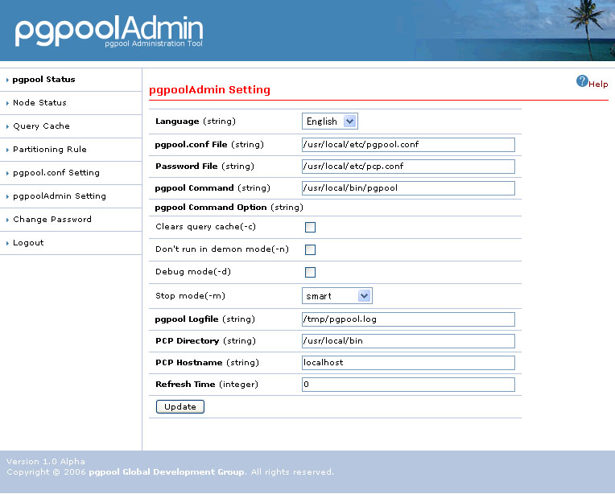

pgpoolAdmin Setting
Summary
The setting of the pgpool administration tool can be displayed and be changed.
Feature
| (string) | The language that wants to be displayed is selected. |
|---|---|
| (string) | Path to pgpool.conf is specified in the full path. |
| (string) | Path to pcp.conf is specified in the full path. |
| (string) | |
| Clears query cache(-c) | When starting pgpool, the query cache is cleared. |
| Don't run in daemon mode(-n) | pgpool can be run in non-daemon mode. For display of pgpool log in this pool, it is necessary to turn on this item. |
| Debug mode(-d) | pgpool can be run in debug mode. When the debugging log is necessary, it turns it on. |
| Stop mode(-d) | All the processes of pgpool are stopped. The pgpool stop option is displayed, when "pgpool Stop" is pushed. There are stop mode for pgpool as follows.
|
| pgpool.conf(-f) | When pgpool starts, pgpool.conf must be specified. The path of pgpool.conf is specified in "pgpool.conf File". |
| pcp.conf(-F) | When pgpool starts, pcp.conf must be specified. The path of pcp.conf is specified in "Password File". |
| (string) | The full-path log file name OR pipe command is specified. To assign a pipe command, make sure it starts with a bar ('|'). If it is left blank and pgpool is started in non-daemon mode, "pgpool.log" file is created in the directory specified by the logdir parameter of pgpool.conf. |
| (string) | The directory that has installed the PCP command is specified. |
| (string) | The host name that executes the PCP command is specified. It usually becomes "localhost". |
| (integer) | The update interval of status is specified every second. When 0 is specified, it doesn't update it automatically. |
Finally, The update button is renewed pushing.